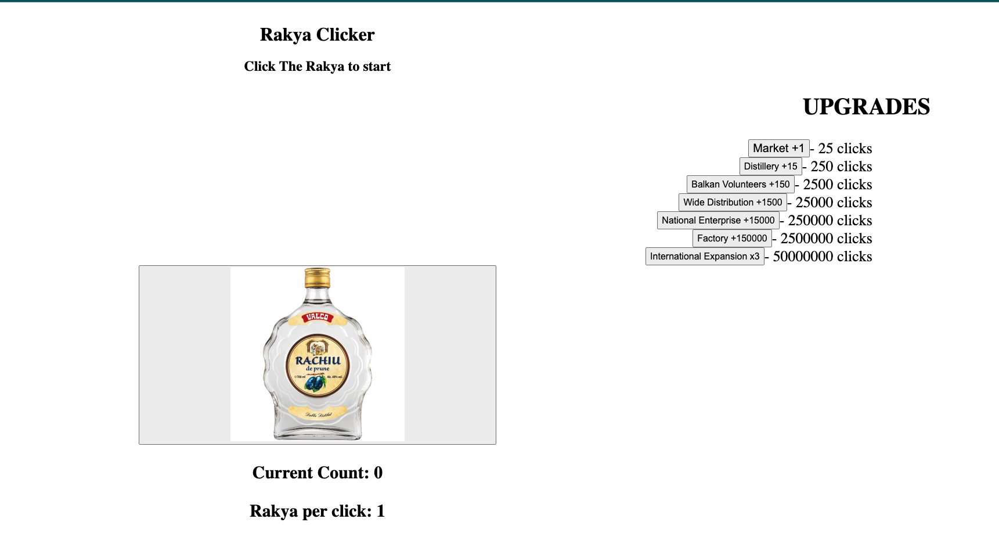

Portfolio
Pylliard

As part of my Computer Science A-level CourseWork, I was tasked to make a final project demonstrating all my knowledge accummulated over the Computer Science A-level Course,
I wanted to challange myself and hence i decided to make a game of Billiards in Python.
I made it using the PyGame Library, which ended up posing a lot of challanges, as PyGame does not have a physics engine of it's own, and therefore i had to homebrew all physics needed.
Some of the challanges i facerd include: Balls not colliding properly with the border and with other balls, I solved this by creating a pseudo Hitbox that checked if there is anything inside twice the radius of a ball.
This issue arrised due to PyGame's inbuilt collision system checks if the center of the ball was colliding with the center of anything else.
Another challange I faced was the border collisions not working properly, this was mainly due to a missunderstanding of how the PyGame Canvas displays given values.
After reasearching the PyGame Documentation, I found out that the 4 parameters taken by the rectangle object were (top,left,height,width), and then hotfixed it.
Overall, the project was a success and it took roughly 5 months to complete.
Technologies used: Python, JSON, Git
Click Here to access source code

I made an animated Wave-Gradient in CSS to further practise the knowledge learnt during my Software Engineering apprenticeship bootcamp.
Technologies used: HTML, CSS, Git
Click Here to access source code
This is an unfinished parody of the Cookie Clicker Game made as a means of practising DOM(Document Object Model) learnt in my Software Engineering apprenticeship bootcamp.
Technologies used: Javascript, HTML, CSS, Git
Click Here to access source code
Similarly to the wave gradient, I also made an animated Spinning Gradient Orb in CSS to further practise the skills learnt during my Software Engineering apprenticeship Bootcamp.
Technologies used: HTML, CSS, Git
Click Here to access source code
This is a To-Do List app, which I made during my Software Engineering apprenticeship Bootcamp as a means to learn and practise Vue3 (Raw).
The app allows a user to view previous to-do list entries as well as add new ones and delete completed ones.
Technologies used: Vue3 (Raw), Javascript, HTML, CSS, Git
Click Here to access source code
Videogamedle
In my final Bootcamp Project, I had to make a joint effort project. Me and my teammate decided on making a game inspired by wordle where you guess a video game.
If you guess correctly you win, and if you guess wrong you will get info about the game along with whether the game's info matches with the correct game's information.
The information provided for each game was the game's: Genre, Publisher, Year of Release, Platform, Players, and Camera Perspective.
If the information of the guess matches the correct game's it turns the circle green, otherwise it will be red,
except for Release Year, which if within 3 years of the correct guess it would turn orange.
We made this project possible using Vue 3 with Composition API and TypeScript for frontend and C# for backend, and SQL for Database where my main focus was the Frontend.
This Project was a great learning Experience, as I got a hands on experience of Vue3 Composition API as well as working in a team.
This was by far my most advanced project at the time of making it.
This project took 2 weeks to complete and it features 111 games to choose from as guesses.
Technologies used(by me): VUE 3 Composition API, TypeScript, JavaScript, HTML, CSS, Git